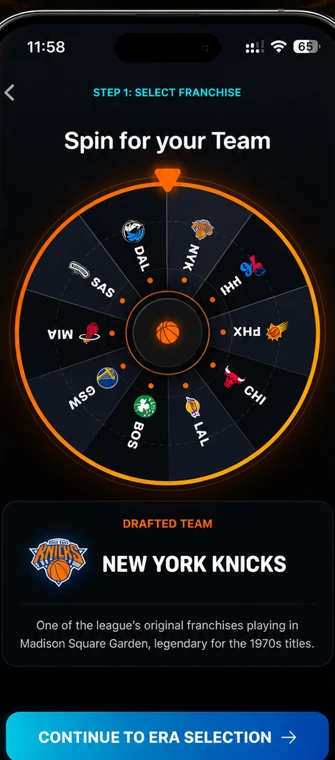

Draw a Team & Historical Era
Each draft pick begins by spinning randomized basketball franchises and decade wheels. Will you land the classic 1980s powerhouse, early 2000s isolation masters, or modern 2020s perimeter snipers?
- Dynamic team wheel featuring iconic basketball franchises
- Historical eras spanning from the 1960s to the 2020s
- Contextual draft pools matching the selected era and squad
